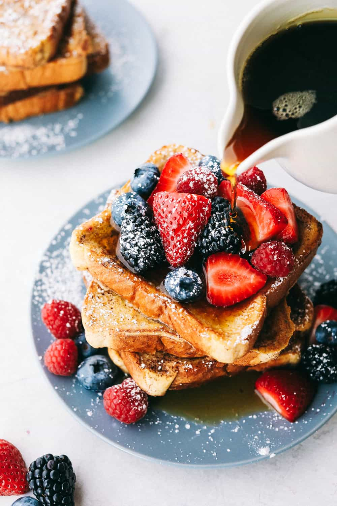

French Toast
French Toast

Description
This is a classic breakfast dish which takes little to no time to make. It is a sweet dish which is fried in some butter and topped with things such as butter, syrup, and even fruits!
Ingredients
- Butter
- 1/3 of a cup of milk
- 1/3 of a cup of sugar
- 3 slices of bread
- Salt to taste
- 1 Egg
- Spices of your choice
Steps
- Mix together the egg, milk, salt, sugar, and spices of your choice together
- Soak your slices of bread in the egg mixture
- Turn your pan up to medium-high heat and add the butter
- Add your soaked pieces of bread to the pan
- Cook till both sides are golden brown
- Add toppings/spices of your liking and enjoy
Main page